Towards an uncertainty-aware BONSAI footprint database
2026-05-03
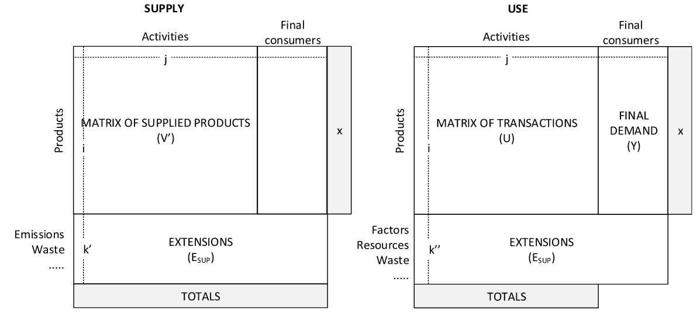
source: Merciai, Stefano. “An Input-Output Model in a Balanced Multi-Layer Framework.” Resources, Conservation and Recycling 150 (November 2019): 104403. https://doi.org/10.1016/j.resconrec.2019.06.037.
Open climate footprint database: bonsai.uno
Hybrid Supply-Use system with multiple property layers
Layers are coupled via conversion factors (e.g., €/t, TJ/t, €/TJ)
dimensions: ~1700 products × ~1500 activities × 49 regions → >1.8M non-zero flows
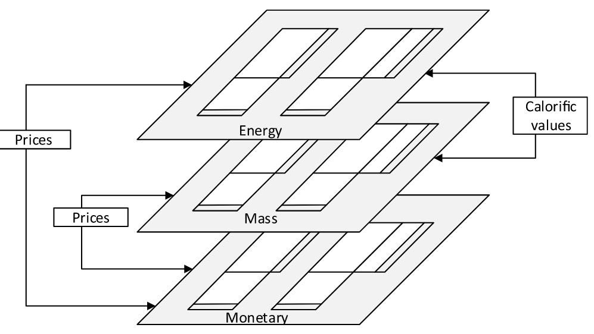
(hyrid) SUTs are compiled from heterogeneous, incomplete and sometimes conflicting data sources
need for balancing (reconciliation) to satisfy key accounting and consistency constraints: e.g. supply = demand, input = output
Standard balancing (RAS, KRAS, WLS, cross-entropy, …) yields a single reconciled table (often without uncertainty)
We need a balancing method that:
can use heterogeneous reliability information in the balancing step
provides the uncertainty for the balanced table
accounts for dependence induced by constraints
supports for downstream uncertainty propagation (e.g. \(P(\mathrm{A}) > P(\mathrm{B})\))
scales to the size of BONSAI
\[ {\color[HTML]{2E5CB8}{ p(\text{SUT} \mid \text{constraints})}} = \frac{ {\color[HTML]{B85C00}{p(\text{constraints} \mid \text{SUT})}} \times {\color[HTML]{556B2F}{p(\text{SUT})}} }{ p(\text{constraints}) } \]
Note
=> everything (supply/use flows, conversion factors, constraints) is a probability distribution!
\[ \class{posterior}{\color[HTML]{2E5CB8}{ p(\text{SUT} \mid \text{constraints})}} = \frac{ \class{likelihood}{\color[HTML]{B85C00}{p(\text{constraints} \mid \text{SUT})}} \times \class{prior}{\color[HTML]{556B2F}{p(\text{SUT})}} }{ \color[HTML]{D3D3D3}{p(\text{constraints}) }} \]
Prior distribution:
\[ \class{posterior}{\color[HTML]{2E5CB8}{ p(\text{SUT} \mid \text{constraints})}} = \frac{ \class{likelihood}{\color[HTML]{B85C00}{p(\text{constraints} \mid \text{SUT})}} \times \class{prior}{\color[HTML]{556B2F}{p(\text{SUT})}} }{ \color[HTML]{D3D3D3}{p(\text{constraints}) }} \]
Likelihood:
\[ \class{posterior}{\color[HTML]{2E5CB8}{ p(\text{SUT} \mid \text{constraints})}} = \frac{ \class{likelihood}{\color[HTML]{B85C00}{p(\text{constraints} \mid \text{SUT})}} \times \class{prior}{\color[HTML]{556B2F}{p(\text{SUT})}} }{ \color[HTML]{D3D3D3}{p(\text{constraints}) }} \]
Likelihood:
Modeled as soft log-ratio constraints:
\[ \log\frac{x_i+\epsilon}{x_j+\epsilon}\sim \mathcal{N}(0,\mathrm{rel\_tol}^2) \]
| Constraint | rel_tol | 95% ratio bounds for \((x_i+ε)/(x_j+ε)\) |
|---|---|---|
| Product balances | 0.05 | [0.907, 1.103] |
| Activity balances | 0.05 | [0.907, 1.103] |
| Conversion factor consistency | 0.10 | [0.822, 1.217] |
| Transfer coefficient consistency | 0.20 | [0.676, 1.480] |
\[ \class{posterior}{\color[HTML]{2E5CB8}{ p(\text{SUT} \mid \text{constraints})}} = \frac{ \class{likelihood}{\color[HTML]{B85C00}{p(\text{constraints} \mid \text{SUT})}} \times \class{prior}{\color[HTML]{556B2F}{p(\text{SUT})}} }{ \color[HTML]{D3D3D3}{p(\text{constraints}) }} \]
Posterior distribution:
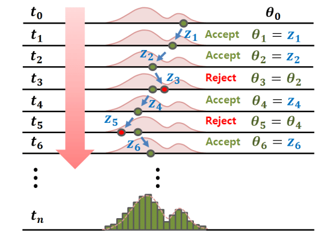
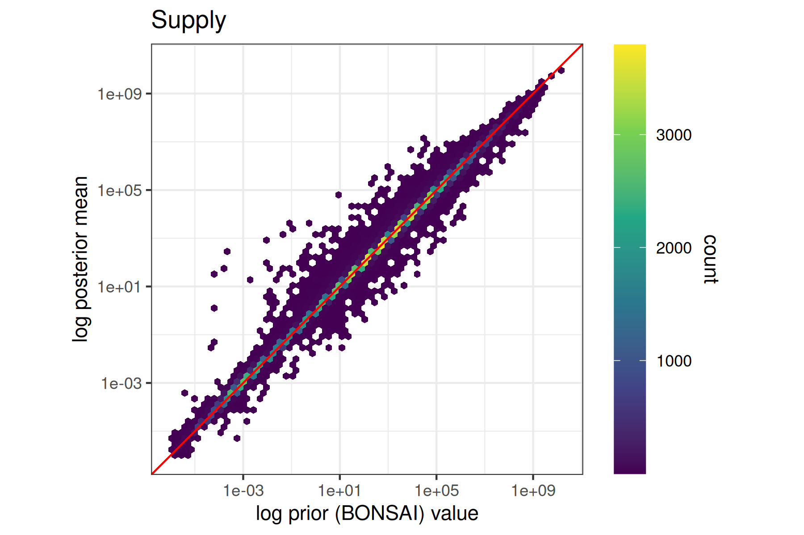
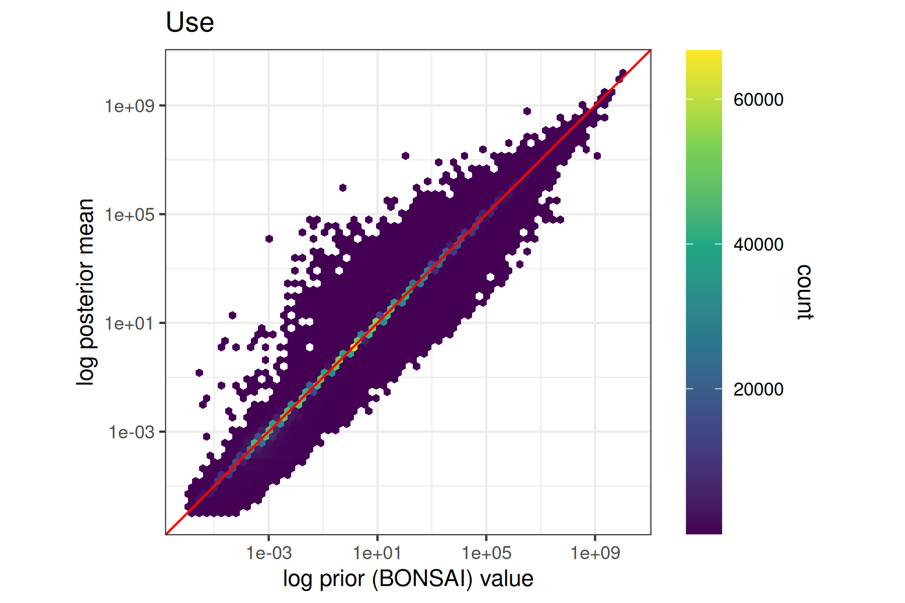
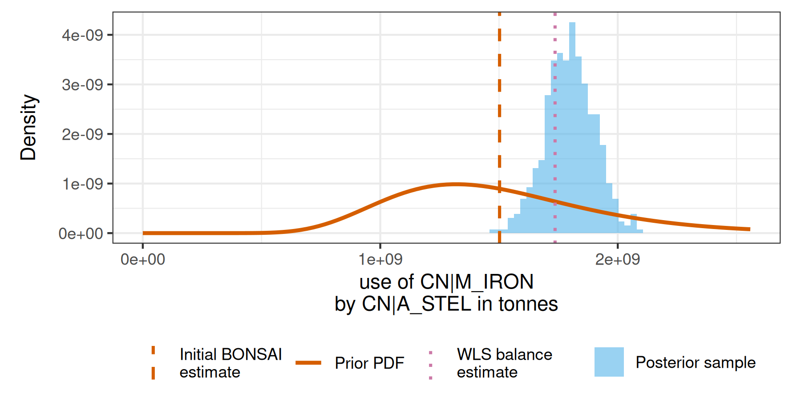
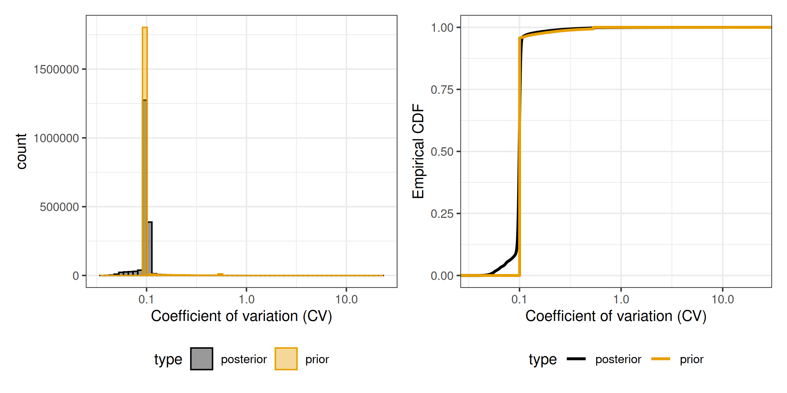
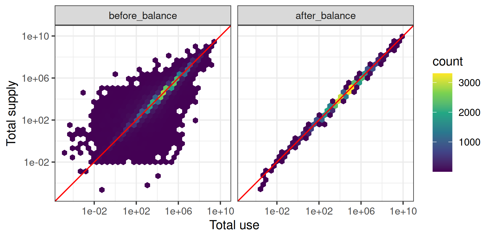
Product constraint [tonnes]
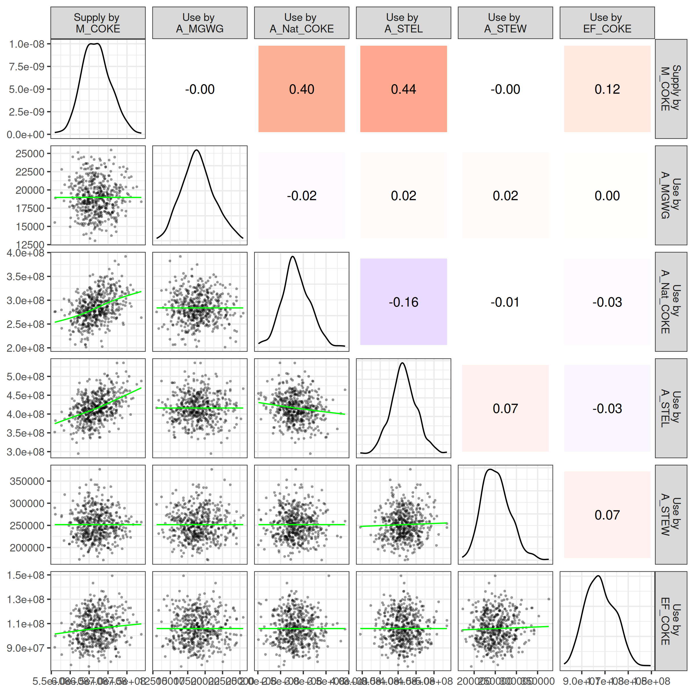
Note
Due to use of soft constraints that still allow for deviation from the constraints, we expect stronger dependencies when tightening the allowed log-ratio deviation from the constraints, which are currently set relatively moderate \(\mathrm{rel\_tol}_*\) between 0.05 and 0.2
prior variances largely data-driven based on prior imbalances (due to computational reasons)
global (coarse) uncertainty parameters for some linkages (conversion between layers, transfer coefficients)
soft constraints require care (tolerances matter)
computational optimisation: post-processing/memory pipeline, MCMC
What tolerances (=deviations from constraints) would you consider acceptable for the respective constraints?
What kind of uncertainty info can statistical offices provide (to be encoded as priors)?
IO practitioners: What would you need to make use of such an uncertainty-aware SUT? (data: full samples, covariances, …; tools: propagate uncertainty further downstream, …; etc.)
Supply & Use flows:
\[ \log x^{(\mathrm{sup},l)}_i \sim \mathcal{N}\bigl(\mu^{(\mathrm{sup},l)}_i,\;\sigma^{(\mathrm{sup},l)\,2}_i\bigr) \]
\[ \log x^{(\mathrm{use},l)}_i \sim \mathcal{N}\bigl(\mu^{(\mathrm{use},l)}_i,\;\sigma^{(\mathrm{use},l)\,2}_i\bigr) \]
Conversion factors:
\[ x^{(cf,l_1\rightarrow l_2)}_i \sim \mathcal{N}(y^{(cf,l_1\rightarrow l_2)}_i,\;\sigma^{(cf,l_1\rightarrow l_2)2}_i) \]
Transfer coefficient:
\[ x^{(\mathrm{tc})}_i \sim \mathrm{Beta}(\alpha^{(\mathrm{tc})}_i,\;\beta^{(\mathrm{tc})}_i) \]
\[ y^{(\mathrm{tc})}_i \sim \mathcal{N}(x^{(\mathrm{tc})}_i,\;\sigma^{(\mathrm{tc})2}_i) \]
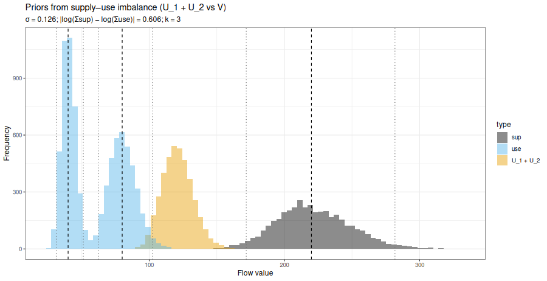
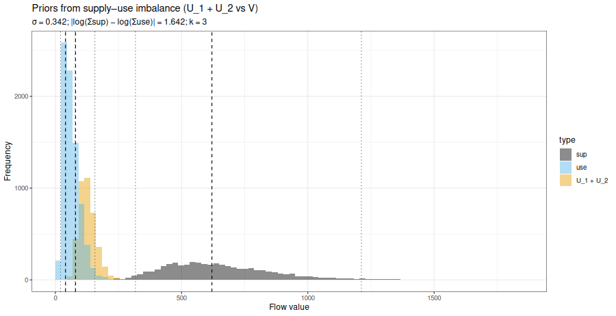
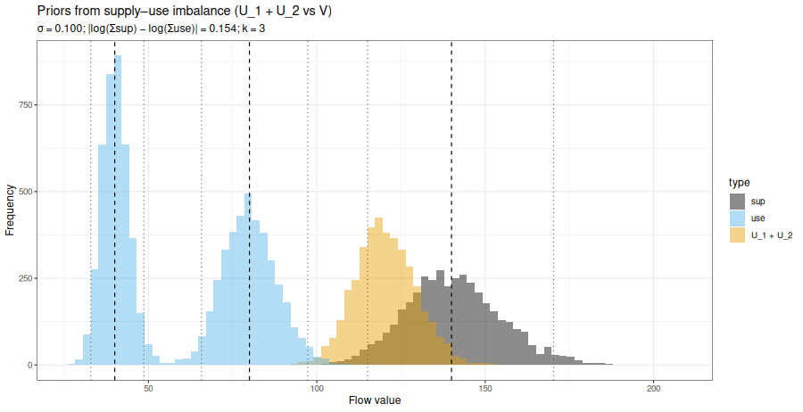
Product constraint:
\[ \log\frac{s^{(l)}_{\mathrm{pr},j} + \epsilon}{l^{(l)}_{\mathrm{pr},j} + \epsilon} \sim \mathcal{N}(0,\;\mathrm{rel\_tol}_{\mathrm{product}}^2) \]
Activity constraint:
\[ \log\frac{o^{(l)}_{\mathrm{ar},k} + \epsilon}{i^{(l)}_{\mathrm{ar},k} + \epsilon} \sim \mathcal{N}(0,\;\mathrm{rel\_tol}_{\mathrm{activity}}^2) \]
\[ \text{converted}^{(\mathrm{sup},l_2)}_i = x^{(\mathrm{sup},l_1)}_i \cdot x^{(cf,l_1\rightarrow l_2)}_i, \]
\[ \text{reference}^{(\mathrm{sup},l_2)}_i = x^{(\mathrm{sup},l_2)}_i \]
(and analogously for use flows \(x^{(\mathrm{use},l)}\)).
Soft log-ratio constraint:
\[ \log \frac{ \text{converted}^{(\cdot)}_i + \epsilon }{ \text{reference}^{(\cdot)}_i + \epsilon } \sim \mathcal{N}\!\left(0,\;\mathrm{rel\_tol}_{\mathrm{conv\_fac}}^{2}\right) \]
First, we have to aggregate supply and use to the product-activity-region (PAR) level (e.g.~total use of steel in car manufacturing in Germany, or supply of cars from car manufacturing in Germany) using aggregation matrices \(\mathbf{A}^{(\cdot)}_{par}\) : \[ \mathbf{x}^{(\mathrm{use},\mathrm{tonnes})}_{\mathrm{par}} = \mathbf{A}^{(\mathrm{use},\mathrm{tonnes})}_{\mathrm{par}} \, \mathbf{x}^{(\mathrm{use},\mathrm{tonnes})} ; \mathbf{x}^{(\mathrm{sup},\mathrm{tonnes})}_{\mathrm{par}} = \mathbf{A}^{(\mathrm{sup},\mathrm{tonnes})}_{\mathrm{par}} \, \mathbf{x}^{(\mathrm{sup},\mathrm{tonnes})} \]
Second, we compute the expected supply from the transfer coefficients by multiplying the transfer coefficient record with the respective use-flow at the PAR-level: \[ x^{(\mathrm{exp\_sup},\mathrm{tonnes})}_{\mathrm{par},i} = x^{(\mathrm{tc})}_i \cdot x^{(\mathrm{use},\mathrm{tonnes})}_{\mathrm{par}, i} \]
Third, we again apply a soft log-ratio constraint so that the observed PAR-level supplies in tonnes must approximately match expected supplies implied via transfer coefficients: \[ \log\frac{ x^{(\mathrm{exp\_sup},\mathrm{tonnes})}_{\mathrm{par},i} + \epsilon }{ x^{(\mathrm{sup},\mathrm{tonnes})}_{\mathrm{par},i} + \epsilon } \sim \mathcal{N}\left(0, \mathrm{rel\_tol}_{\mathrm{tc}}^{2}\right) \]
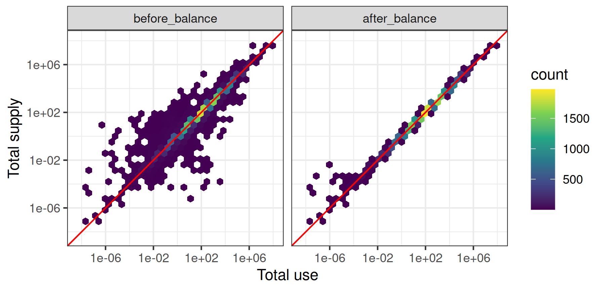
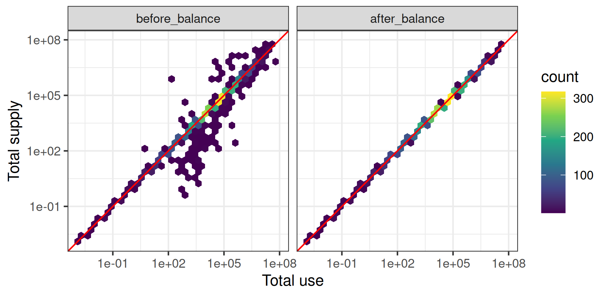
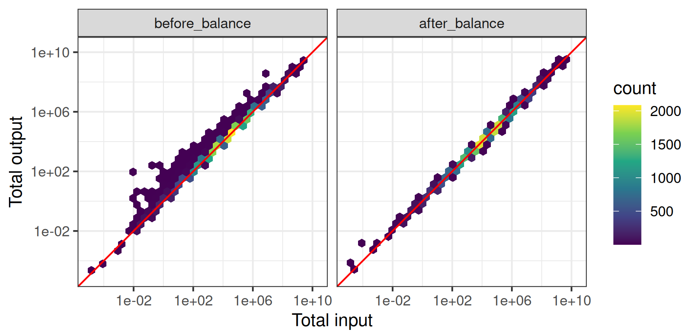
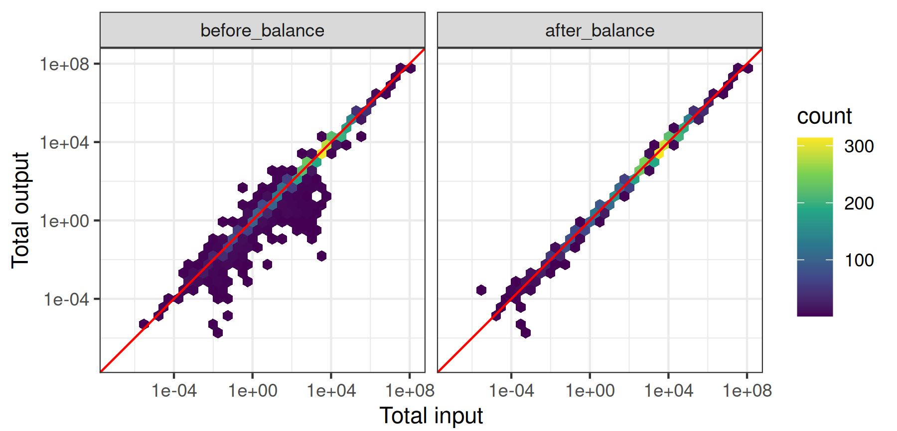
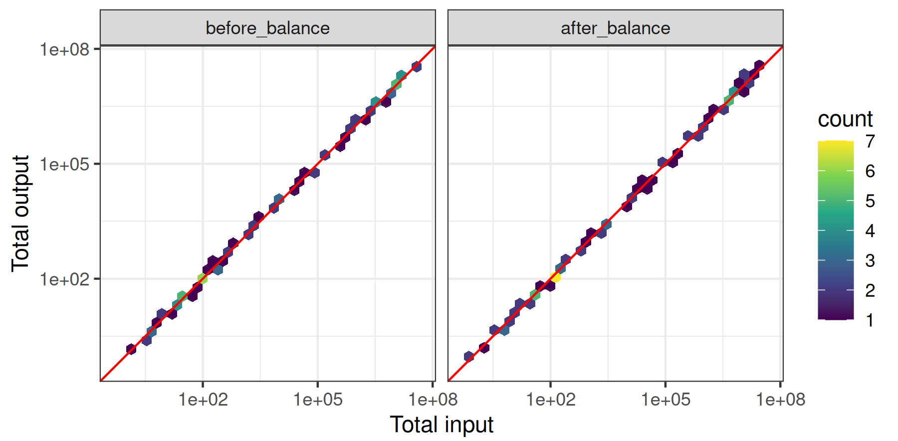
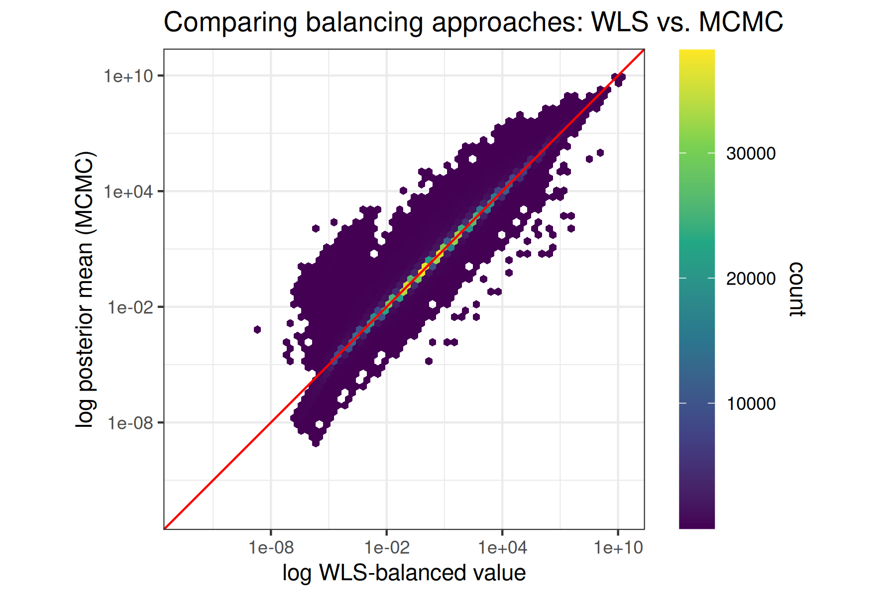